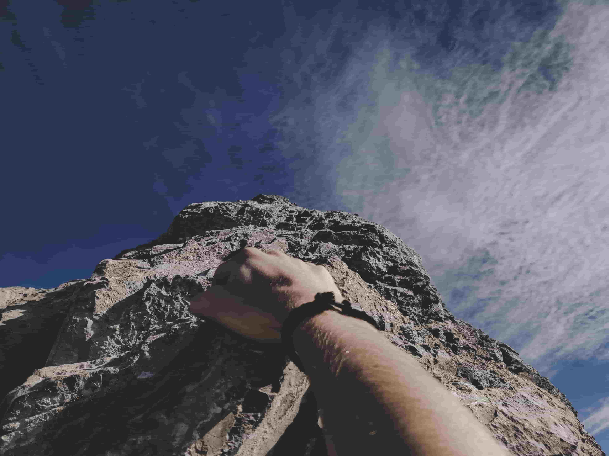
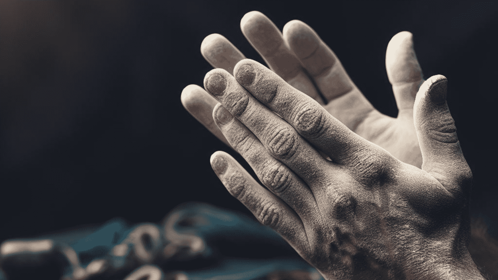

Honest Review of the Heart Pounding Documentary, Free Solo

If you've got ever felt the adrenaline rush of residing life on the brink, then "Free Solo," the gripping documentary offering the fearless climber Alex Honnold, is your price ticket to an adventure of an entire life. This article dives into the depths of the unfastened solo climbing international, explores the awe-inspiring documentary that introduced it to the mainstream, and unveils the person in the back of the gripping climbs—Alex Honnold.
Table of contents
- The Heart-Pounding World of Free Solo Climbing
- What is Free Solo Climbing?
- Free Solo Climbing Deaths: Fact or Fiction?
- Alex Honnold: The Man, The Myth, The Climber
- The Unmatched Skills of Alex Honnold
- Climbing into Alex Honnold's Past
- The Free Soloist's Personal Life
- The Hands That Defy Gravity
- Beyond the Cliffs: Alex Honnold's Net Worth and Sponsors
- Free Solo: A Cinematic Masterpiece
- The Rise of Free Solo Documentaries
- The Free Solo Movie
- A Glimpse into the Movie
- Where to Watch Free Solo?
- How to Watch Free Solo
- The Dark Side of Free Solo Climbing: Deaths and Controversies
- FAQs About Free Solo Climbing and Alex Honnold
- Conclusion: Scaling Heights with Alex Honnold and Free Solo
The Heart-Pounding World of Free Solo Climbing
What is Free Solo Climbing?
Free solo mountaineering is not for the faint-hearted! It involves scaling rock faces without any safety system, ropes, or harnesses. It's simply the climber, their talent, and the sheer face of the mountain. The chance is sky-excessive, but so is the praise—the unfiltered connection between the climber and the rock.
Freepik/ Image by means of kjpargeter
Free Solo Climbing Deaths: Fact or Fiction?
One of the most searched queries approximately loose solo hiking revolves around deaths. It's simple that the stakes are excessive, but misconceptions often surround this severe game. The documentary addresses this head-on, providing an intimate have a look at the risks, coaching, and mental fortitude that go into every climb.
Alex Honnold: The Man, The Myth, The Climber
The Unmatched Skills of Alex Honnold
Alex Honnold, the face of loose solo mountaineering, has come to be a household name for adventure fans. But who is this man who fearlessly tackles death-defying climbs? Let's get to the bottom of the layers of Alex Honnold, from his early days to his reputation as a mountain climbing legend.
Climbing into Alex Honnold's Past
- Born on August 17, 1985, Alex Honnold found his passion for mountaineering at a young age.
- His obsession with scaling heights led him to unfastened solo hiking, where he observed his actual calling.
- From Yosemite to El Capitan, Honnold's climbs are a testament to his unparalleled skill and resolution.
The Free Soloist's Personal Life
- Alex Honnold's wife, spotlight the interest approximately his private life.
- Currently single, Honnold's romantic lifestyles became featured inside the documentary, shedding mild on the challenges of balancing love and a existence devoted to hiking.
The Hands That Defy Gravity
The search for "Alex Honnold arms" is indicative of the fascination with the bodily toll mountaineering takes. His palms, calloused and resilient, inform a story of limitless hours spent gripping rock faces, defying the boundaries of human energy.
Beyond the Cliffs: Alex Honnold's Net Worth and Sponsors
The intrigue surrounding Alex Honnold extends beyond his mountain climbing abilties. Questions like "Alex Honnold net worth" and "Alex Honnold sponsors" hint at the economic facet of this adrenaline-fueled lifestyle.
With an estimated net really worth of two hundreds of thousands, Honnold has efficaciously grew to become his ardour right into a beneficial profession. Sponsors inclusive of Clif Bar have diagnosed the marketability of this rock-climbing icon, aligning their emblem along with his fearless photograph.
Free Solo: A Cinematic Masterpiece
The Rise of Free Solo Documentaries
The developing interest in unfastened solo mountain climbing has birthed a genre of documentaries, with "Free Solo" main the %. Queries like "free solo climbing documentaries" and "unfastened climb documentary" underline the thirst for greater content material in this space.
The Free Solo Movie
"Free Solo" isn't always just a documentary; it's a cinematic triumph that captivates audiences worldwide. The movie, directed through Jimmy Chin and Elizabeth Chai Vasarhelyi, received the 2019 Academy Award for Best Documentary Feature.
A Glimpse into the Movie
- With breathtaking cinematography and coronary heart-stopping moments, the movie gives an intimate check out the thoughts of a loose soloist.
- The documentary captures Honnold's adventure to overcome El Capitan, a 3,000-foot vertical rock face in Yosemite National Park.
Where to Watch Free Solo?
"Where can I watch Free Solo?" is a commonplace query for those eager to experience the joys. The documentary is broadly to be had on streaming platforms, permitting viewers to witness the courage and vulnerability of a man facing nature's closing undertaking.
- Platforms like Netflix and Hulu often characteristic "Free Solo" in their documentary sections.
- The availability of the film on various streaming offerings ensures that you can experience this heart-pounding adventure from the consolation of your property.
How to Watch Free Solo
- Check your chosen streaming services: Netflix, Hulu, and Amazon Prime regularly have a rotating choice of documentaries.
- Explore specialized documentary platforms: Platforms like CuriosityStream and DocPlay cater specially to documentary enthusiasts.
- Keep an eye on broadcast schedules: Cable and satellite vendors may function "Free Solo" of their programming, offering an alternative to streaming.
The Dark Side of Free Solo Climbing: Deaths and Controversies
The powerful facet of unfastened solo mountain climbing is simple, but it comes with a fee. The search for terms like "loose solo deaths" and "free soloing deaths" goes into the darker factors of this excessive sport.
- The documentary addresses the essential risks of unfastened solo hiking and indicates the fatalities which have passed off within the hiking community.
- It makes a conversation about the moral considerations of pushing oneself to the boundaries and the impact on friends, own family, and the hiking network. Especially if your life is dependent on no longer making one unmarried mistake whilst mountaineering with out included gear due to the fact then you would possibly fall in your death.